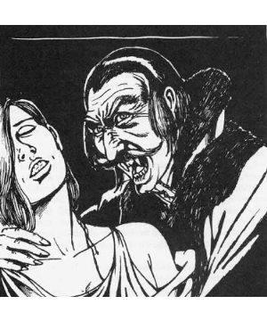

2122
Of all the dark and evil things that move about in the mists of Ravenloft, none is more feared than the vampire. These creatures can often move freely about in the world of men and, as such, are all the more dreadful. Their unexpected attacks often target the innocent and helpless, leaving little hope that a victim will survive to lead would-be vampire hunters to the monster. All-in-all, they are certainly the darkest of the dark.
Ravenloft is home to many vampires, some of whom are even lords of their own domains. Strahd Von Zarovich, the master of Barovia, is one such creature. His darkness is so great that many believe the land itself to be tied directly to him. This may or may not be true, but the Vistani and Lord Azalin of Darkon certainly seem to believe it. Other vampire lords, like Duke Gundar of Gundarak, are certainly powerful — but none can compare to the might or the evil that is Strahd’s.
Becoming a Vampire
As describes in the Ravenloft Boxed Set, there are three ways to become a vampire. Each of these paths to darkness has its own unique character, but the end result is always a creature of unsurpassed evil and power.
The first path, generally known as that of deadly desire, is perhaps the most awful. In this case, the individual who is destined to become a vampire actually wishes to cross over and become undead. While it has been said that they must sacrifice their lives to attain this goal, a greater cost is often paid. Those who desire to live eternally and feed on the life essences of their fellow men must give up a portion of their spirits to the Dark Powers themselves. In this way, they are granted the powers of the undead, but also stripped of the last vestiges of their humanity. In the centuries to come, many find this loss too great to bear and seek out their own destruction.
The second path, that of the curse, is often the most insidious of the three. In this case, the individual is often unaware that he or she is destined to become a thing of the night. The transformation into “unlife” might occur because of a potent curse laid down by someone who has been wronged by the victim. Occasionally, an individual might find that he or she has inherited (or found) a beautiful and alluring magical ring — only to find that it cannot be removed and that the character is slowly … changing. There are those who accept this curse and embrace their new existence as a vampire, while others despise the things they have become. In nearly every case, these are the most passionate and “alive” examples of this evil race.
The final, and surely most tragic, path to vampirism is that of the victim. This is the route most commonly taken to vampirism, for it is the way in which those slain by a vampire become vampires themselves. Vampires created in this way almost always detest themselves and the creature that made them what they are. More information on this type of vampire is presented in the next section, which details the relationship of such creatures to their masters. All-in-all, the victims of other vampires are unhappy in their new lives, for few ever accept their fates happily — and many do not have the strength of character to seek an end to their wretched “unlives”.
Vampire Masters & Slaves
When a vampire decides to create new slaves, it does so by taking their lives in some special way. For most, it is simply the draining of their life energies or the drinking of their blood. Whatever the end result, if the victim dies from the feeding of the beast, he or she rises again as a vampire. At this point, the victim of the attack is enslaved by the vampire that created it.
The newly created monster seldom has any fraction of its master’s power and is thus unable to challenge its master’s authority. Further, the master exerts a powerful form of charm over its subjects that prevents them from acting to destroy it. This does not, however, mean that the vampire’s minions cannot act to undermine the vampire’s plans in minor ways, only that they must do as they as ordered by their lord. Unlike the limitations of a traditional charm the vampire’s power enables him to order his slaves to destroy their loved ones or act against their own self interest without resistance.
Vampire Companions
As the years pass, vampires often find that their greatest enemies are not would-be heroes, but time and boredom. The immortality they may once have craved now looks like a bleak and endless chain of suffering that they must wear eternally. To ease their misery, many vampires seek out a special companion. The most commonly encountered form of this is regarded, by those unfamiliar with the depth of the bond to be established, in the same way that they might look upon any normal person taking a wife or husband. In truth, there is far more to this process.
The process of vampiric bonding is as murky as the fog that often shrouds the vampire’s movement. When the vampire decides to take a companion, it generally (although not always) seeks out an individual of the opposite sex that reminds them of someone they loved in life. The vampire repeatedly visits the victim, feeding on them until they are at the point of death. At the last, when all hope seems lost, the vampire draws away the last vestiges of the companion’s life and infuses them with its own energies. The process is both traumatic and passionate, for this mingling of essences is far more intimate than any purely physical act of love.
When the bonding is complete, both the vampire and its victim are exhausted and all but helpless for upwards of an hour. At the end of that time, the victim has become a vampire.
While the newly created companion is as much a slave of its master as any vampire spawned from an act of violence, there is something special about it. The companion shares a special metaphysical link with its master. Both can experience the other’s senses at certain times of day or under the influence of certain charms and enchantments. In many cases, this bond is fleeting and exists only briefly, at dawn and dusk, for example, while for others it is a continuous exchange that cannot be broken without the death of one or the other. In many cases, a vampire’s companion also has the ability to command its master’s slaves, so long as no action is ordered that would place them in direct confrontation with their creator.
From the point of their bonding on, the two vampires are utterly loyal to each other. While the master might willingly sacrifice its other minions as pawns, it will protect its companion as if it were a king or queen. Likewise, the companion will take no action against its master and will do all that it can to protect him or her from harm. Both will even give up their own lives to save that of their companion. In fact, the bond between the two is so intense that if the master is slain, its companion retains the ability to command its slaves as if he or she were the vampire that had created them.
◆ 1900 ◆